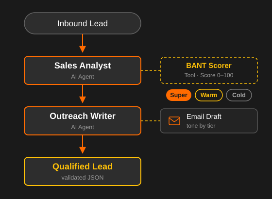

What’s in it for you?
Save time
Routine work runs automatically – year after year.
Fewer errors
Consistent quality instead of manual slips.
Scalable
Handle more volume without more effort.
Focus on what matters
Free up your staff for valuable work.
Typical areas and examples
Sales & CRM
Capture leads, maintain data, prepare follow-ups.
Accounting & invoices
Create, check and prepare invoices.
Email & communication
Sort, answer or forward emails.
Documents & data
Capture and transfer content from PDFs and forms.

How it works
- Runs locally or on a web server. Support with GDPR.
- Clarify / identify the use case
Free initial consultation, on-site in the region or online - Proposed solution
- Implementation
Many tasks in a company repeat every day: transferring data, answering emails, creating reports. Exactly this kind of routine can be reliably automated with AI today – without replacing your existing programs.
Depending on the task, a fixed workflow (clear rules) or an AI agent (understands text and makes decisions) is used – often a combination of both. The solution integrates with your existing systems like CRM, ERP or email and fits into your processes.
What does an automation cost?
Small use cases are available from approx. €1,000, larger projects are billed by effort. In a free initial consultation I assess your case concretely.
How long does implementation take?
A small use case is often ready within a few days. I deliberately start small and expand the automation step by step.
What about data protection?
The solution can run locally or on your own server. I support a GDPR-compliant implementation.
Am I locked in to a vendor?
No. The solutions rely on open, replaceable components – you keep control over your data and systems.
Why work with me?
I have been developing software for over 25 years and use AI in practice every day. You get a solution that actually works – pragmatic, clearly explained and tailored to your needs.
Experience
Over 25 years in software development, databases and AI.
AI-native approach
Fast, cost-efficient implementation with the latest AI.
Regional & personal
On-site in Bamberg/Nuremberg or online – one fixed point of contact.
GDPR from the start: runs locally or on your own server – with support for a GDPR-compliant implementation.
Let’s talk about your use case
First assessment free of charge – on-site in Bamberg and surroundings or online.